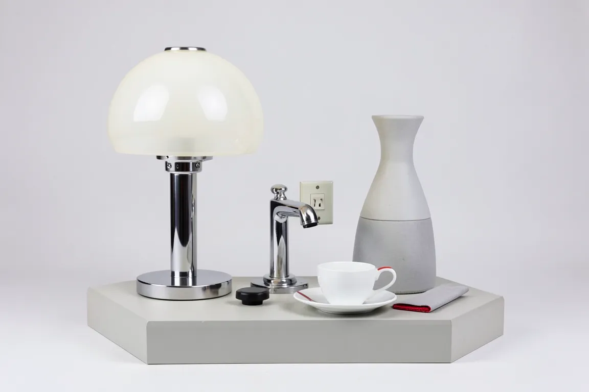

Bauhaus' verkstedsgjenstander: lamper, teservice og stoler bygget av kulen, sylinderen og kjeglen i nikkel, krom, opalglass og bøyd stålrør, som modeller for masseproduksjon.

Kjerneidé
En hverdagsgjenstand er en modell for fabrikken: formen kommer fra enkel geometri, materialet og bruken, og ornament har ingen plass på den.
Designprinsipper
Bygg hver kropp av en kule, en sylinder, en kjegle eller en kube; vis legemet, ikke en stil.
La hver del gjøre én jobb, og la øyet lese jobben: en stamme bærer, en skjerm sprer lys, et håndtak holder.
Bruk bøyd stålrør på 20 til 25 mm til rammen på et sete eller et bord, og la det stå bart og forkrommet.
Bruk opalglass til en diffusor og nikkel eller krom til metalldelene.
Hold flatene glatte og uten ornament; en skrue eller en skjøt blir stående i syne.
Hold fargen til materialets egen farge, med svart, hvitt og høyst én primærfarge.
Tegn hver gjenstand slik at en fabrikk kan lage den i serie av standarddeler.
Antimønstre
Påsatt ornament, et støpt blad eller en snirkel
Historiserende former som kopierer en tidligere stil
Skjulte skjøter som later som gjenstanden er ett stykke